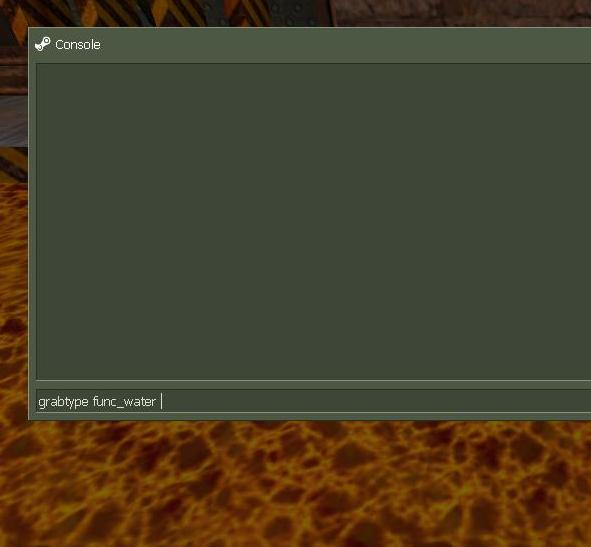
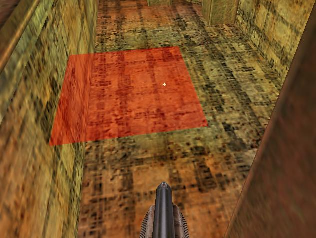
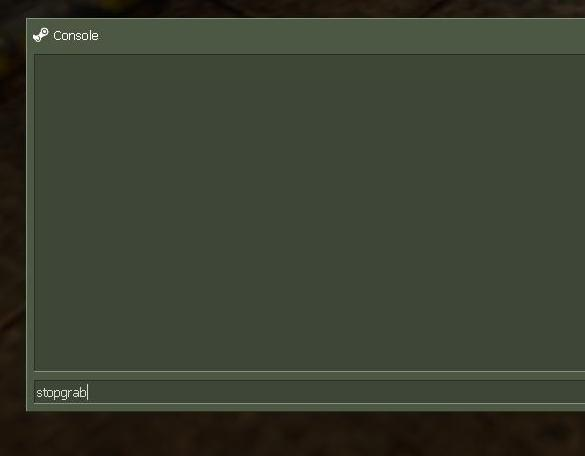
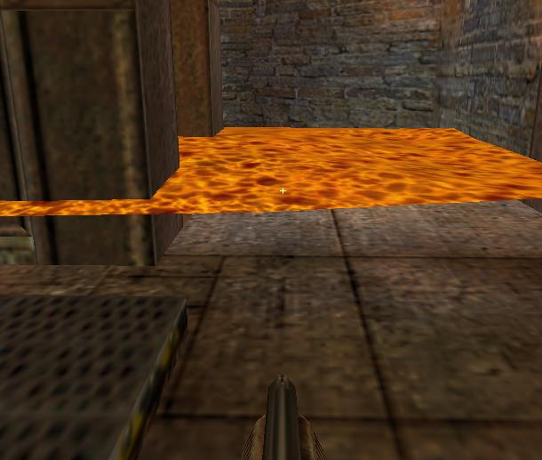

|
This section will explain to you how to use the grabtype command in Ent Mod:
Command Use:
First, you will need to enter the command in the console:

As you can see in the picture above, the grabtype command was entered. The func_water is the name what you are trying to grab. To get the name of a solid object, look at it and use the entmod_lookingat command. You can also use the e_search command to show you a list of all entities within a 100 unit radius of yourself.
Next, you can see the effect of the command after enter is pressed:

In the picture above you can see that the water that +grabent would not grab, is now grabbed. After you have it grabbed, you can move it to wherever you would like.
Next, we will look at how to drop what you have grabbed:

In the picture above you can see the stopgrab command was entered.
Now, we will look at the effect of this command after enter is pressed:

As you can see in the picture above, the func_water was let go in its new place.
A useful command to use if you do not know the ent name of what you are trying to grab is to use the entmod_lookingat command. This command can not do non-solids such as func_water or func_illusionary but it can give the name of others. If you want to get a name of a non-solid entity you can run the e_search command. This will show you a list of all entities within a 100 unit radius of yourself.
This example was done with the DeathMatch Classic mod but this example holds true for all Half-Life mods. |